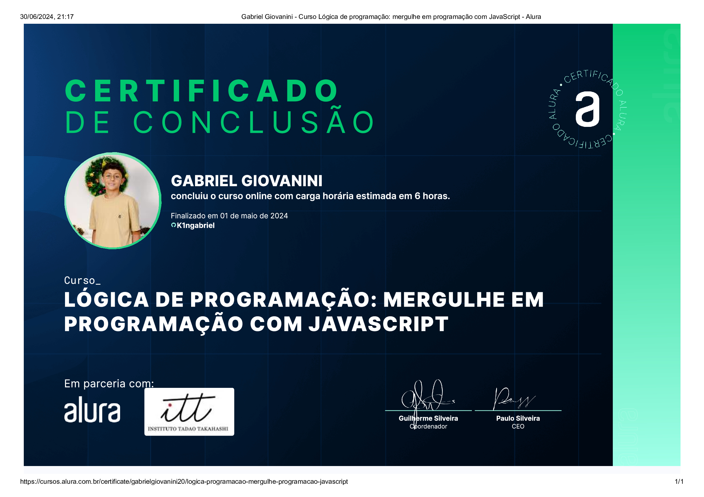
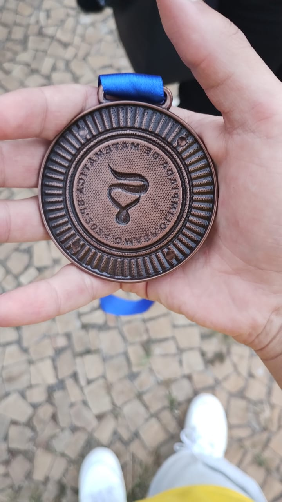
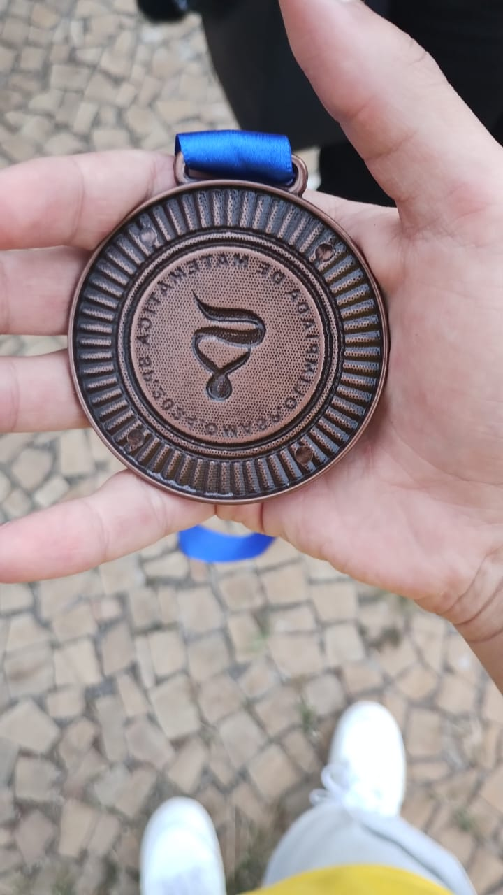
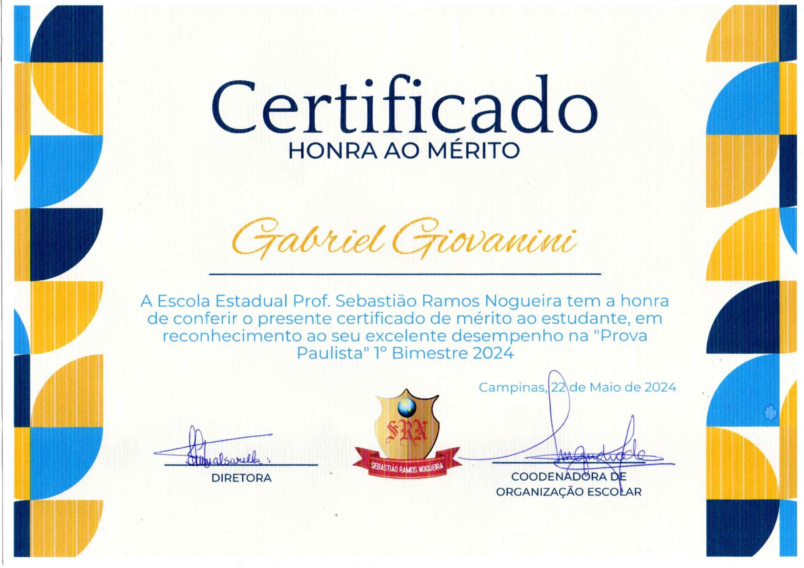

Minhas conquistas
Aqui em baixo irei colocar todos os meus cursos concluidos, meus certificados e minhas medalhas fora do curso. (no final da pagina está meus sites que eu fiz com o apoio do curso)
Primeiro curso. Onde mexo minha primeira vez com javascript, foi uma experiência muito boa e divertida porque além de nunca ter mexido no javascript, nunca mexi com códigos, então aprendi variaveis, alerts e prompts, a extensão do live server, como funciona o mundo da programação, o Visual Studio Code e ja tinha uma base do que era o back-end e front end. Nesse curso o html e o css ja vinham prontos e eu só mexia na parte do javascript.
Segundo curso. Onde mexo com arrays, funções, muitas variáveis e códigos novos, no primeiro curso eu estava usando alerts e prompts para interagir com o leitor, nesse eu ja uso os botões através do onclick e também coloco uma voz para ouvir o que é falado no projeto quando algo acontece dentro do jogo, também dentro do curso aprendi a baixar repositórios pelo GitHub e transformar ele em site pelo vercel. Nesse curso o html e o css ja vinham prontos e eu só mexia na parte do javascript.

Terceiro curso. Esse curso foi feito mais para você aprender a mexer com a parte compartilhável do seu projeto, no outro curso apenas colocamos os arquivos no git hub, sem contato nenhum com nosso computador, já nesse curso aprendemos a como conectar nosso Visual Studio Code com nosso projeto do GitHub, usando o terminal ddo visual studio code, com a chave ssh e outros comandos que utilizamos dentro do terminal, também aprendemos a fazer commits, alterações nos commits, como duas pessoas ou mais podem mexer no mesmo códigos e támbem simularam um conflito caso as pessoas mexessem nas mesmas linhas. Tudo veio pronto, só mexi no GitHub.

Quarto curso. Esse curso tinha o objetivo de melhorar nossa lógica de programação com o javascript, fazendo vários projetos diferentes. Ao total foram cinco, são eles: Sorteador de número; Alugames; Carrinho de compras; E-ticket; Amigo secreto. Foram projetos simples e bem rápidos somente para aprimorar nossa lógica de programação, aqui eu ja criei entendi totalmente o que é Front-end e Back-End. Nesses projetos o html e o css ja vinham prontos e eu só mexia na parte do javascript.

Quinto curso. Onde mexo minha primeira vez com html e css, foi uma experiência muito boa e divertida, nesse curso eu aprendi como cria arquivos, estruturar o html, toda as meta informações, head, body, main, titulo, paragrafo, lista, imagens, ancoras, urls e no css eu apenas modifiquei a cor do texto para branco e a cor de fundo para preto, esse projeto é o atual site que você está agora porém muito aprimorado.

Sexto curso. Nesse curso eu aprimorei o mesmo site do curso 6 que é o mesmo que você está vendo agora, aprendi a usar classes, seções, footer, header, main, divisões no html porém eu utilizava apenas a parte do main, o site tinha apenas uma página pois ainda não utilizava o cabeçalho. No css eu aprendi muitas coisas novas, box-sizing, Flexbox, altura, largura, gap, flex-direction, align-items e tambem custumizei os botões das minhas redes sociais inteirinhas, com padding, border, border-radius, entre outros.

Medalha de bronze da olimpiada de matematica. Essa foi a medalha que eu consegui após acertar 14 de 20 questões na Olimpiada de matemática na qual eu competia com o estado de São Paulo do nivel 2 inteiro, essa é a segunda fase, a primeira foi a prova paulista que foi a qual eu tirei 100% de acertos, passei e ganhei a medalha.
 

Prova paulista. Esse é o certificado que a escola da aos alunos com mais de 90% de acertos na prova paulista inteira, de toda a minha escola eu fui 1 dos 7 alunos que ganharam esse certificado e eu posso afirmar que não é facil de ganhar ele pois a prova tem muitas questões e algumas ainda são dificeis, eu estou muito feliz de ter ganhado esse certificado, vou guarda-lo muito bem e ficar na busca de mais e mais.
Aqui em baixo está o link de todos os meus projetos feitos nos cursos: